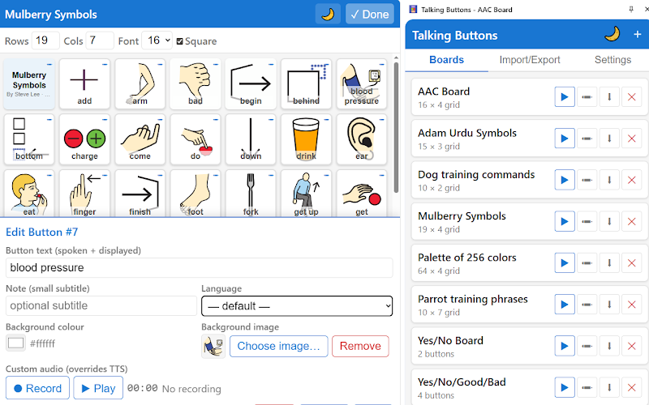

Кнопки, которые говорят за вас
«Говорящие кнопки» превращают телефон или планшет Android, Chromebook или браузер Chrome на компьютере в коммуникативные доску — для тех, кто испытывает трудности с речью. Доступно в виде приложений для Android или расширения для браузера Chrome.
Кому подойдёт
- Людям, испытывающим трудности с речью из-за инсульта, афазии, аутизма и других причин
- Их близким и опекунам
- Медицинским специалистам, в том числе профильных специальностей (нейропсихолог, логопед)
- Больницам и клиникам для общения с пациентами
Основные возможности
- Настройка — размер и количество кнопок, текст, цвет и размер шрифта
- Картинки на кнопках — каждой кнопке может быть назначена картинка
- Синтез речи — выбор голоса из набора, установленного на устройстве или в браузере
- Запись голоса — короткие фразы на кнопках, если синтеза речи недостаточно
- Предустановленные доски — готовые раскладки поставляются в качестве примера и основы для дополнения под ваши нужды
- OBF/OBZ — обмен между устройствами и резервное копирование; совместимость с другими АДК-приложениями в открытом формате
Приложение Android и расширение Chrome
Android
Мобильно, работает без интернета на телефонах и планшетах. Полноэкранный режим снижает случайные выходы. Удобно для детей и пациентов с ограниченной подвижностью.
Chrome
Работает в браузере Chrome или на Chromebook. Удобно на домашнем компьютере или ноутбуке, а также на компьютере с общим доступом в классе или в клинике. Незаменимо для настройки картинок на кнопках.
Одни и те же АДК-доски: экспорт и импорт в переносимом формате - Open Board Format (OBF/OBZ). Создайте и настройте доску на компьютере, пользуйтесь на планшете — или наоборот.
Приложение для Android
Прокрутите по горизонтали, чтобы увидеть все изображения.


Расширение для Chrome

Конфиденциальность
Ваши доски и записи хранятся на устройстве или в браузере — не на наших серверах. Кратко о конфиденциальности.